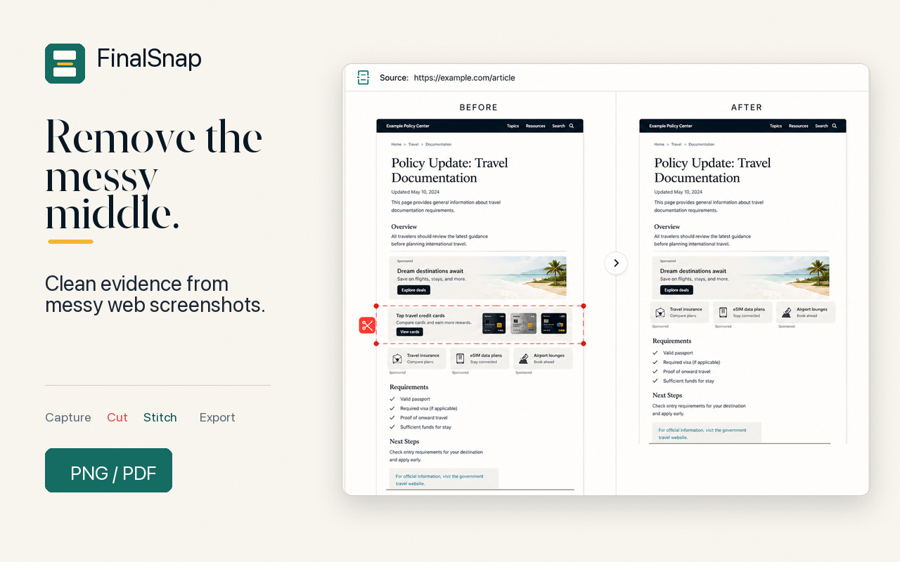

Remove middle sections.
Delete irrelevant horizontal bands from long captures without rebuilding the image manually.
Official install page
FinalSnap starts in Chrome, captures the page, then gives you a focused cleanup bench for Cut Middle, reconnect, erase, and export.
Chrome Web Store is the official install source. If it does not open in your region, email support instead of downloading an unverified package.

What it does after capture
Delete irrelevant horizontal bands from long captures without rebuilding the image manually.
The content below the cut moves upward so the remaining evidence reads as one record.
Finish the record as a clean screenshot or PDF instead of opening another editor.

Install decision
FinalSnap is built for immigration, legal, compliance, research, reporting, and documentation workflows where the screenshot needs to become clean evidence.